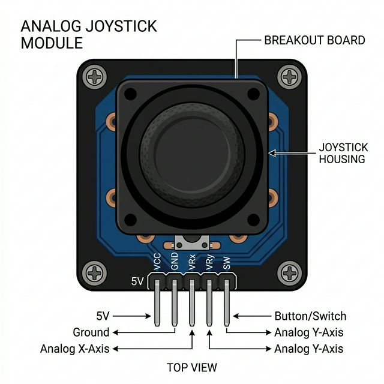

The Analog Joystick is a multi-axis physical controller, functionally identical to the thumbsticks found on PlayStation or Xbox controller pads. It allows for precise, omni-directional 360-degree input alongside a tactile click button.

The joystick is essentially a clever mechanical wrapper around two potentiometers and one momentary tactile switch:
analogRead() value of roughly 512).| Pin | Function |
|---|---|
| VCC | Power supply. Connect to Arduino 5V. |
| GND | Common ground connection. |
| VRx / HOR | Analog Output for X-axis (Horizontal). Connect to an Analog Pin (e.g., A0). |
| VRy / VER | Analog Output for Y-axis (Vertical). Connect to an Analog Pin (e.g., A1). |
| SW / SEL | Digital switch output. Connect to a Digital Pin. Needs a pull-up resistor (INPUT_PULLUP). |
To use the joystick during a simulation, simply click and drag the black thumbstick! It supports full 360-degree analog sweeping. You can also quickly click the center of the thumbstick to trigger the downward button press event.
You need to read two analog pins and one digital pin (configured with an internal pull-up resistor). Note that when resting, analog pins will read near 512.
// Define Connections
const int xPin = A0; // connected to VRx
const int yPin = A1; // connected to VRy
const int swPin = 2; // connected to SW
void setup() {
Serial.begin(9600);
// The switch shorts to ground when pressed,
// so we must use the internal pull-up resistor!
pinMode(swPin, INPUT_PULLUP);
}
void loop() {
// Read analog voltages (Values will be 0 to 1023)
int xValue = analogRead(xPin);
int yValue = analogRead(yPin);
// Read the digital button (LOW means pressed)
int buttonState = digitalRead(swPin);
Serial.print("X: ");
Serial.print(xValue);
Serial.print(" | Y: ");
Serial.print(yValue);
Serial.print(" | Status: ");
if (buttonState == LOW) {
Serial.println("CLICKED! 🔴");
} else {
Serial.println("Released");
}
delay(200); // Short delay to prevent serial spam
}